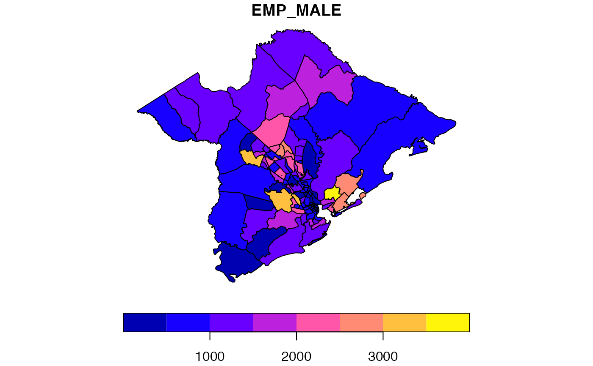

2000 Census Tract Data for Charleston, SC MSA and counties.
charleston1
An sf data frame with 117 rows, 31 variables, and a geometry column:
FIPS Code
MSA Name
Total population: Total
Total population: Under 16
Total population: 65+
Total population: Not Hispanic or Latino; White alone
Total population: Not Hispanic or Latino; Black or African American alone
Total population: Not Hispanic or Latino; Asian alone
Total population: Hispanic or Latino
Total population: Not Hispanic or Latino; Two or more races
Total population: Male
Total population: Female
Total population: Male working age 16-64
Total population: Female working age 16-64
Workers 16 years and over: Total
Workers 16 years and over: Did not work at home
Workers 16 years and over: Worked at home
Workers 16 years and over: Did not work at home; Travel time to work; Less than 30 minutes
Workers 16 years and over: Did not work at home; Travel time to work; 30 minutes or more
Employed civilian population 16 years and over: Total
Employed civilian population 16 years and over: Male
Employed civilian population 16 years and over: Female
Employed civilian population 16 years and over: Production occupations
Employed civilian population 16 years and over: Office (001-219 except 020, 021)
Employed civilian population 16 years and over: Computer and mathematical occupations
Households: Median household income in 1999
Population for whom poverty status is determined: Total Population
Population for whom poverty status is determined: Income in 1999 below poverty level
Owner-occupied housing units: Median value
Unique ID
2000 Census, Summary File 3. Available at http://factfinder.census.gov. Note that the poverty variable names can be easily confused: pov_pop is the reference population (i.e. total population); pov_tot is all poor persons.
Sf object, unprojected. EPSG 4326: WGS84.
if (requireNamespace("sf", quietly = TRUE)) { library(sf) data(charleston1) plot(charleston1["EMP_MALE"]) }